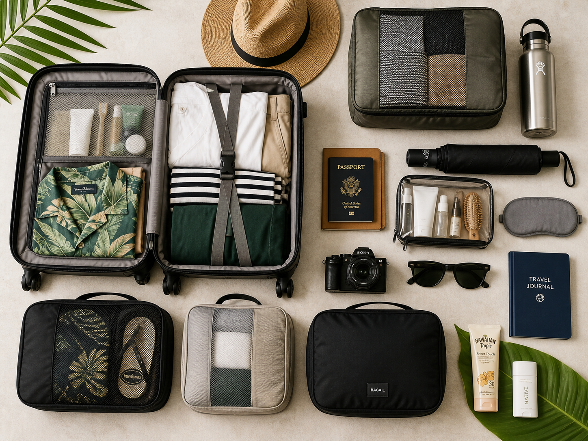

The Ultimate Phuket Packing List:
Expert Tips for 2026
"I've seen thousands of travelers arrive in Phuket with suitcases full of heavy denim, three pairs of jeans, and expensive raincoats that they never wear. Don't be that traveler."
Phuket is a unique environment. It’s not just "hot"—it’s humid. It’s not just "sunny"—the UV index here will burn you in 15 minutes. And if you’re visiting during the monsoon (May to October), you're dealing with tropical deluges that turn streets into rivers. Packing correctly isn't just about fashion; it’s about survival and comfort.
The Golden Rule: Fabric is Everything
In Phuket, 100% Cotton and Linen are your best friends. Avoid polyester or synthetic blends at all costs. Why? Because synthetics don't breathe. When you combine 90% humidity with 32°C heat, polyester acts like a plastic bag, trapping sweat against your skin. You'll end up with heat rash or just a general sense of misery.
- Linen: The king of tropical wear. It dries fast and looks better when it's slightly wrinkled (which it will be).
- Rayon/Viscose: Excellent for light dresses and shirts. It's soft and stays cool.
- Microfiber: Only for your gym gear or swimwear.
1. High Season Essentials (November – April)
During the high season, the sky is sapphire blue and the humidity is slightly lower, but the sun is brutal. This is the time for island hopping, beach clubs, and late-night strolls in Old Town.
Clothing
You need less than you think. Most travelers wear 50% of what they pack. Stick to light colors. Dark colors absorb heat and make you a target for the afternoon sun.
Footwear
Bring one pair of comfortable walking sandals (like Birkenstocks or Tevas) and one pair of flip-flops. You will be taking your shoes off constantly—entering temples, shops, and even some cafes. Complex laces are your enemy.
2. Low Season (Monsoon) Essentials (May – October)
If you're visiting in the "Green Season," your priorities shift to rain management. But here’s the secret: **Do not bring a heavy raincoat.** You will sweat more inside the coat than you would if you just got rained on. Instead, buy a 20 THB plastic poncho from any 7-Eleven when the sky opens up.
The "Dry Bag" is Non-Negotiable
If you are planning any boat trips during the monsoon, your stuff *will* get wet. Buy a 10L or 20L dry bag. They are sold on every street corner in Patong for about 300 THB. It’s the only way to keep your phone and camera safe during a sudden tropical downpour.
3. The "Temple Kit"
You cannot enter the Big Buddha or Wat Chalong in a bikini or sleeveless shirt. Both men and women must cover their shoulders and knees. Keep a lightweight sarong in your day bag. It takes up zero space and can be used as a towel, a shoulder cover, or a makeshift picnic blanket.
Interactive Packing Checklist Saves automatically to your browser
Your Progress
0%Seasonal Deep Dive: More Than Just Rain
To truly understand what to pack, you need to understand the nuances of Phuket's climate. It isn't just a toggle between "dry" and "wet."
The Peak Heat (March – April)
This is the hottest time of the year. The sun is directly overhead, and temperatures regularly hit 35°C (95°F) with 80% humidity. During this time, your packing list should prioritize **UV protection**. Long-sleeved linen shirts are actually cooler than tank tops because they keep the direct sun off your skin. If you are here for Songkran (Thai New Year), pack clothes that can get wet and dry quickly—denim is a nightmare during the water fights.
The Cool High Season (November – February)
I use the word "cool" loosely. It’s still 30°C, but the humidity drops and there’s a lovely breeze from the Northeast. This is the only time you might want a very light cardigan or pashmina for the evenings, especially if you are dining by the sea where the breeze can feel surprisingly chilly after a day in the sun.
Packing for Island Hopping & Day Trips
If you're heading to the Phi Phi Islands or Phang Nga Bay, your packing needs change. You'll be transitioning from air-conditioned vans to speedboats to waist-deep water.
- Water Shoes: Many islands have coral fragments or sharp rocks near the shore. A pair of lightweight mesh water shoes will save your feet.
- Action Camera: If you have a GoPro, this is where it shines. Phuket’s underwater world is stunning, but the salt water is corrosive. Always rinse your gear in fresh water immediately after your trip.
- Microfiber Towel: Most hotels provide large, heavy beach towels. They are great for the pool but terrible for island hopping—they stay wet and get heavy. A compact microfiber towel is a game-changer.
Phuket After Dark: What to Wear?
Phuket’s nightlife ranges from the chaotic neon of Bangla Road to the ultra-chic beach clubs of Bang Tao. Your packing list needs to reflect both.
Beach Clubs & Upscale Dining
Places like Catch Beach Club or Carpe Diem have a "Resort Chic" dress code. For men, this means tailored linen trousers or nice shorts and a collared linen shirt. For women, a maxi dress or a stylish jumpsuit is perfect. Avoid flip-flops here; opt for leather sandals or loafers.
Night Markets & Street Food
Keep it casual. You’ll be walking a lot, and it will be crowded. Wear shorts and a breathable t-shirt. Most importantly, wear shoes that are easy to slip on and off if you decide to go into a massage shop or a boutique along the way.
Expanded Health & Safety Packing
Beyond the basic pharmacy kit, there are a few "pro" items that locals always keep in their bags.
Anti-Chafe Balm
This is the one item no one talks about until they need it. The combination of salt water, sand, and sweat can lead to severe chafing during long walks on the beach. A small stick of anti-chafe balm will be the best $10 you ever spent.
Activated Charcoal
While Thai food is generally safe and delicious, the change in spice levels and ingredients can sometimes upset your stomach. Activated charcoal is available in every 7-Eleven (look for the "CA-R-BON" brand), but having some in your bag for the first night can be a lifesaver.
Waterproof Phone Pouch
Even if your phone is "water-resistant," the salt water in the Andaman Sea is a different beast. A simple plastic waterproof pouch that hangs around your neck is essential for boat trips and even for keeping your phone dry during a sudden monsoon downpour while you're on a scooter.
Final Thoughts from Pom
Packing for Phuket is about freedom. The less you carry, the easier it is to jump on a long-tail boat, hop on a scooter, or change hotels. Most people find that by day three, they are living in the same two pairs of linen shorts and a t-shirt. Pack light, pack natural, and leave room in your suitcase for the treasures you'll find in the Sunday Night Market.